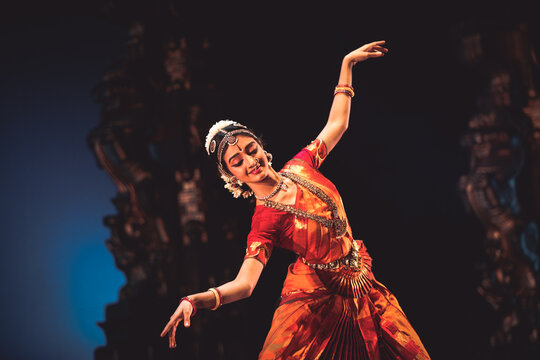
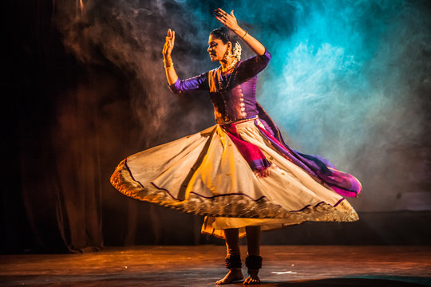

1. Bharatanatyam
Bharatanatyam is one of the oldest classical dance forms of India, originating in Tamil Nadu. It has deep roots in ancient Indian culture and tradition, with its origins traced back over 2,000 years to the Natya Shastra, an ancient Sanskrit text on performing arts. Traditionally performed by women in temples, Bharatanatyam integrates expressive storytelling with intricate footwork, hand gestures (mudras), and facial expressions (abhinaya) to convey various themes, including devotion, mythology, and everyday life. The dance form is characterized by its grace, rhythmic precision, and spiritual depth, making it a vital part of India’s rich cultural heritage.
2.Kathak
Kathak is a classical dance form from North India known for its intricate footwork, graceful spins, and expressive storytelling. Rooted in ancient Hindu temple rituals, Kathak evolved through centuries, incorporating influences from Persian and Mughal traditions during India's medieval period. The dance is characterized by its rhythmic complexity and narrative style, often depicting mythological and historical stories. Performers wear elaborate costumes and use expressive gestures, facial expressions, and dynamic movements to convey emotions and tales. Kathak is not just a dance but a rich cultural heritage, reflecting the diverse history and artistic traditions of India.